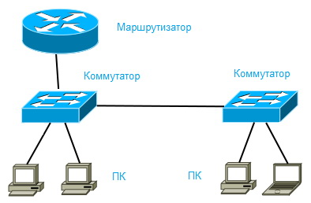

Անջատիչների վրա հիմնված տեղական ցանցերի կառուցում

Մինչ Ethernet տեխնոլոգիան որոշում է, թե ինչ է տեղի ունենում յուրաքանչյուր ալիքում, շատ ավելի նշանակալից իրադարձություններ են տեղի ունենում մնացվածի վրա
նրանց սարքերը՝ ցանցային քարտեր և LAN անջատիչներ: Այս գլուխը շարունակում է թեման
Ethernet LAN-ների հիմքերը, որոնք սկսվել են 2-րդ գլխում, ավելի մանրամասն լուսաբանմամբ
ժամանակակից Ethernet ցանցերի ասպեկտները և դրա մեջ օգտագործվող հիմնական սարքը
տեղական ցանցերի ստեղծում, - LAN անջատիչներ.
Այս գլխում Ethernet LAN-ների և միացման մասին քննարկումը բաժանված է երկու բաժնի: Առաջին, հիմնական բաժինը քննարկում է տրամաբանությունը, որն օգտագործվում է LAN անջատիչների կողմից Ethemet շրջանակները փոխանցելիս, ինչպես նաև հարակից տերմինաբանությունը: Երկրորդ բաժինը կկենտրոնանա շենքում կամ տարածքում նոր Ethernet տեղական ցանցի նախագծման և ներդրման վրա:
Երկրորդ բաժինը վերաբերում է նախագծման խնդիրներին, ինչպիսիք են կիրառումը
անջատիչներ տարբեր նպատակներով՝ ընտրելով Ethernet կապի տեսակը և օգտագործելով Ethernet-ի ավտոմատ բանակցությունները:
--------------------------------------------------------------------------------------------------------------------------------------------------------------------------------------------------------------------------------------------------------------------------------------------------------------------------------------------------------------------
LAN անջատման հայեցակարգեր
Անջատիչները ստանում են Ethernet շրջանակներ մեկ պորտի վրա և այնուհետև փոխանցում (փոխարկում) դրանք մեկ կամ մի քանի այլ նավահանգիստներ: Այս բաժինը նվիրված է
թե ինչպես են անջատիչները կայացնում փոխարկման որոշումները: Բացի այդ, այստեղ քննարկվում են մի քանի հարակից հասկացություններ, որոնց իմացությունն անհրաժեշտ է
անջատիչների միջոցով Ethernet շրջանակի վերահասցեավորման ավելի ամբողջական ընկալման համար:
Ժամանակակից տերմինաբանությունը ավելի պարզ դարձնելու համար այս բաժնում քննարկվում է
նախ՝ հին Ethernet LAN-երը, որոնք օգտագործում էին հանգույցներ: Այս բաժնի հիմնական մասը նվիրված է վերահասցեավորման տրամաբանության հիմունքներին, և բաժինը եզրափակվում է Cisco Systems-ի անջատիչների ներքին հնարավորությունների քննարկմամբ:
Ethernet շրջանակների մշակում: